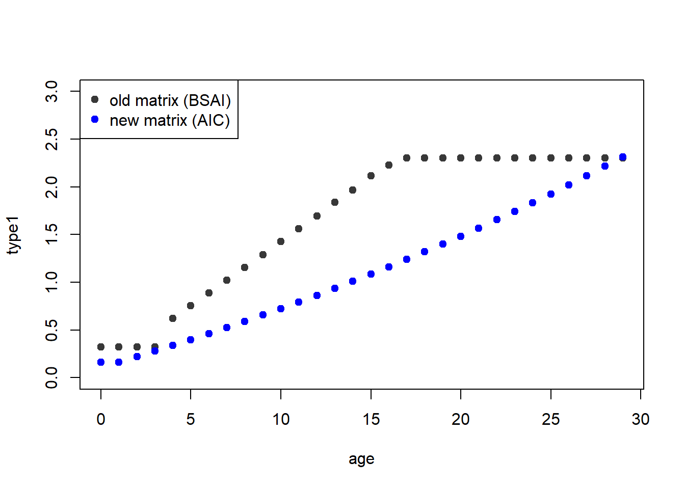
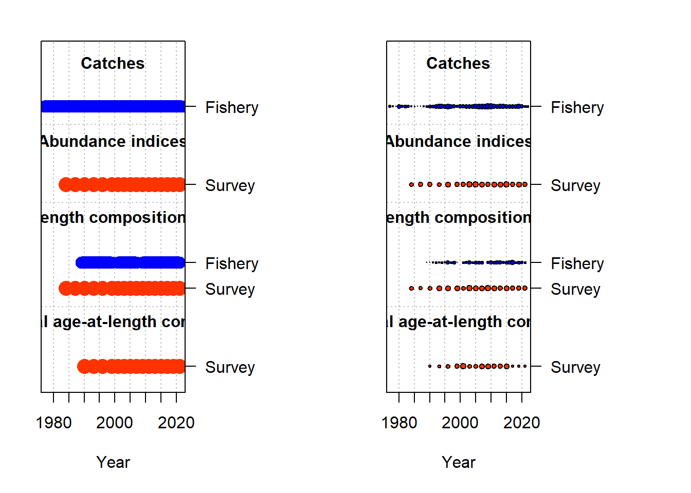

GOA FHS Assessment Bridging (version & data)
Bridging from SS3v3.24U to SSv3.30.17
C. Monnahan began this effort in summer of 2021. He found that the ss_trans.exe software was unable to work on the 2017 model as-was due to the following line in the .dat file: -1 0 #_surveytiming_in_season. R. Methot suggested converting this line to -1.5 #_surveytiming_in_season, which enabled the transition function to complete, but modified the timing of the survey, thus producing discrepant likelihoods. R. Methot then suggested changing the survey index month to 1.0 (in the new v3.30 dat file), but added that v3.24 could only produce expected length-composition values using midseason age-length keys. In other words, the previous version of this model was estimating length composition values assuming that the age-length key applied to the middle of the year, so there will necessarily be a discrepancy between the structure and magnitude of vulnerable biomass to the survey if those data are specified as being observed at the beginning of the year.
To work around this, Rick indicated we could instead adjust only the survey composition month (“seas”) in the transitioned model to 7.0, essentially aligning the observed compositions with the mid-year biomass. We acknowledge this is a kludge, considering that the compositions and indices come from the same surveys; for future benchmark updates, scientists may elect to change the survey data season universally (in line with the model labeled old-MLEs below). This cycle, we elected to use the approach which produced results most similar to the 2017 benchmark.
The following documents the steps taken to explore this issue and arrive at a bridged baseline model in SS3v3.30.17. The likelihoods and derived quantities are similar (and indistinguishable for management purposes) but we do not believe values will ever be an exact match due to differences in how survey timing is handled between versions.
Note that the transitioning step otherwise conserved data weighting components (i.e., the McAllister-Ianelli values which upweight both fleet’s lenghtcomps and downweight the survey CAALs)
Transition with updated survey timing
Survey index, length and CAAL month = 7.0
Take the .ss_new files from model 3.24U, update the survey index and composition timing to 7.0, and run ss_trans.exe v3.30.17 using command -maxI -1. This command overrides the max phase set in the starter file (effectively disabling estimation).
Pass old MLEs for rec devs
Survey index, length and CAAL month = 7.0
This model takes the .ss_new files from the transitioned model, and pastes in the MLEs for recruitment devs from the original model (3.24) into the .par file (both recdev early and main). This exercise demonstrates that the population dynamics are the same when the forecasted recruitment devs from the original model (3.24U) are passed into the .ss_new files from the transitioned model.
Adjust timing
Survey index month = 1.0, length and CAAL month = 7.0
Using the .ss_new files from the previous model (with 3.24U’s rec devs), turn off the estimation of forecasted recruitment devs (forecast dev phase = -1 in starter), change the survey index timing back to month = 1.0 and re-run using the original MLEs (ss.par, no estimation). This is effectively re-introducing the survey timing as specified in the original model while keeping all the optimized the parameters the same; the fit to the index does improve, but it is not an exact match. This demonstrates that the discrepancies between versions is caused by the way survey timing is handled in the internal dynamics of v3.30+.
Optimize (full conversion)
This is the same as the previous model, but with optimization enabled. This model (“converted”, red line below) acts as the baseline transitioned model for 3.30.17. After optimization, the index matches well, but it scales the population up (\(log R_0\) increases from 12.8219 to 12.8948). However, note that steepness is fixed to 1 in this model, so this just increases the average recruitment.
Note that the vulnerable biomass (to the survey) has changed between versions, due to timing.
Tabular comparison of index estimates across models.
| Yr | 3.24U | 3.30_old_mles | 3.30_adjust_timing | 3.30_converted |
|---|---|---|---|---|
| 1984 | 194111 | 175363 | 177545 | 191451 |
| 1987 | 212047 | 191789 | 196469 | 211547 |
| 1990 | 217585 | 196154 | 202873 | 218188 |
| 1993 | 211659 | 190104 | 197518 | 212444 |
| 1996 | 210349 | 188793 | 195764 | 210756 |
| 1999 | 213239 | 192496 | 198590 | 213998 |
| 2001 | 209268 | 188396 | 195372 | 210533 |
| 2003 | 210248 | 189011 | 195457 | 210599 |
| 2005 | 216855 | 194942 | 201291 | 216890 |
| 2007 | 218486 | 196128 | 202812 | 218599 |
| 2009 | 223924 | 200782 | 207541 | 223792 |
| 2011 | 226471 | 203554 | 210298 | 227034 |
| 2013 | 225652 | 202769 | 209822 | 226679 |
| 2015 | 235911 | 212497 | 217832 | 235613 |
| 2017 | 259246 | 233169 | 239103 | 258938 |
Tabular comparison of likelihoods across models.
| component | 3.24U | 3.30_old_mles | 3.30_adjust_timing | 3.30_converted |
|---|---|---|---|---|
| Age_comp | 1019.12000 | 1018.97000 | 1018.96000 | 1020.45000 |
| Length_comp | 539.11800 | 539.21500 | 539.05500 | 538.99700 |
| Recruitment | -4.34713 | -5.65658 | -4.34713 | -4.42665 |
| Survey | -19.01160 | -7.89258 | -12.87580 | -18.74870 |
| TOTAL | 1534.88000 | 1544.63000 | 1540.79000 | 1536.27000 |
Tabular comparison of model scale (R0 estimates) across models.
| Label | 3.24U | 3.30_old_mles | 3.30_adjust_timing | 3.30_converted |
|---|---|---|---|---|
| SR_LN(R0) | 12.8219 | 12.8219 | 12.8219 | 12.8948 |
Attempt survey index timing month = 7
Survey index month = 7.0, length and CAAL month = 7.0
Out of curiosity, we investigated the impact of (correctly) specifying the survey index month as 7.0 and disabling optimization, using the parameter values from 3.30_converted above. Total SSB is distinct among the three (with the updated timing model even more different), though the survey fits are indistinguishable.
VAST data
I received the model-based index with data through 2021 from GAP in Spring 2022. Since I plan to present this as a sensitivity to the proposed base model, we should also illustrate how the use of VAST would have affected the previous [converted] benchmark. This model is identical to m02_3.30_converted otherwise (the survey index timing is 1.0). As we might expect, the SSB is higher in the VAST version since the model-based inputs are higher than the design-based since ~2000. Reassuringly the dynamics are largely similar between converted models for the years where the VAST & design-based inputs are more alike.

New aging error matrix in 2017 model m0_4
The SSC recommended exploration/addition of a new aging error matrix. To that end, we have a few different options, and it is desirable to illustrate how they affect the base model (no new data) before proceeding.
The present GOA aging error matrix actually comes from the BSAI assessment, and basically says that error increases linearly to a maximum at age 16. We do have read-replicate data for GOA FHS. We created several candidate models that either treated the individual readers separately (there are ~10 of them) or pooled the data (meaning the difference between a read by Delsa & Jon is equivalent to the difference between Tom & Mary). The best AIC was obtained by a pooled-data model which assumed constant bias and sigma across readers (bias is the different-integer age read, and sigma is the variation in true age). This is called aic2p in the ageing_error/real_data folder. The bias is otherwise identical between approaches.

Here I run the converted model with the new aging error matrix from aic2p. This involved replacing the chunk in the .dat file with the 1 age err definition and a line for the bias (“expected age” from the package output) and CV. There is not a strong change in derived quantities. The newer model has a better overall likelihood, which shows up in the lengths, ages, and recruitments.
Data Bridging
Here I start with the transitioned model and sequentially add data. Unless otherwise specified, the entire data series was replaced with the new extraction to accomodate for any changes in our databases. There are no changes made to the parameter specifications (priors, start values, etc). The following changes were also made to peripheral SS3 files before beginning; these apply to models m0_1 onward:
I copied m02_2017_3.30.17 into the main model_runs dir and renamed it to “m0_0”.
In
control.ss, the main period of recruitment devs apparently hasn’t changed from 2010.1 upon the last assessment. For consistency I will leave that as-is for now, but likely will adjust as a sensitivity. However i did change_end_yr_for_ramp_in_MPDto 2026.4. Time blocks do not cross the endyr so I made no adjustments there.In
data.sschangeendyrto 2022.Ensure estimation is turned on in
starter.ssIn
forecast.ssfirst year for caps and allocations = 2023, update rebuilder years, though note we do not use the forecast file whatsoever in this assessment.Functionality check was conducted in dir
/m0_0checkto confirm that time series estimation is pushed forward as expected.
Add catch m0_1
Right now 2022 catches are a placeholder, will project closer to the time of.
Add design-based survey index m0_2
In addition to the 2019 & 2021 data points, this time series has a different value for 2001, about 18,000mt less than previous. Discussion with RACE and review of both the AFSC database and previous SAFE tables indicated we should go with the newer, lower value – it is not clear where the ~170mt value came from previously.
Add fishery length comps m_03
As previously, data before 1989 are included but turned off. The following years of the fishery length comps are ghosted: 1982, 1983, 1985, 1986, 1987, 1988, 2000, 2008, 2022. I noticed that the input data in the previous model is in somewhat strange raw numbers (i.e an observed number of 132.708 within a sample size of 46). When you run ss_output() on the original data, it returns lendbase scaled to 1, which I used to spot check that the extracted data was accurate in the 00_getData.R script. So, I replaced the entire data frame in this step, acknowledging that the input scale is different.
The aggregate fit is fine but the residuals in the early period are awful (this was the case before as well).


Add survey length comps m_04
The nsamp (nhauls) has changed by 1 or so across years between the old version and this. I updated the data-prep method from Carey’s code into tidyverse and spot checked that the values were consistent among entries (with a rounding tolerance of 1e-4). I also see that in the original data, data from years 1982-1988 are ignored, as are years 2000, 2002, and 2008 (for fishery); these are related to low-haul years. As above, this overwrites the entirety of the survey length comps in the .dat file with the values drawn from RACEBASE, Jul 2022.
Add survey CAALs & marginal survey ages as ghost fleet m0_5
Here I incorporate the conditional ages at length as well as the marginal ages, both from the GOA survey thru year 2021; the latter are read in as a ghost fleet and don’t contribute to the likelihoods. I confirmed with N Roberson that these were in RACEBASE before extracting to avoid issues with the AGEPOP column (this is an active effort zone with SMART/RACE reproductibility initiatives). For clarity, I deleted the expected values printed at the bottom of data.ss because in earlier runs I accidentally wrote the CAALs into there (they didn’t show up in the data plots!).
As of m_05, all of the new data have been included in the model, but there hasn’t been any changes to model process/spex beyond the end-year stuff mentioned above.
Also note that this model has not yet dealt with the various warning messages, and has retained the Francis weighting values from the benchmark. Notably, those values down-weight the age comp (CAAL) data to 0.34, which might explain why the diagnostics therein are only so-so.
Good to look at the SS.html file to confirm the marginal ages are indeed ghosted in there.

Warnings and further model updates m0_6
Now that the data are in, I do the minimal amount of tweaks to deal with the warnings and update the rec-dev situation here.m0_6 has the same data as m0_5, but with the following changes in response to warnings.ss. After each change I double-checked that things could run but didn’t make individual models for each change. + control.ss: Change recr_dist method to 4, removing recdist parameters below growth (no pop dy change) + control.ss: last year of main recr_devs to 2020. Update bias adjustment ramp in so that the _last_yr_fullbias_adj_in_MPD = 2020.1, and _end_yr_for_ramp_in_MPD = 2021.4 (thus endyear is not in forecast. I didn’t change the maximum bias adjustment value, but it seems a little low; the min-max recdevs also seem a little high.) + control.ss: Parameters 6 & 17 (Age_DblN_end_logit_Fishery & Age_DblN_end_logit_Survey) is fixed at 999 to make it asymptotic. This can typically be accomplished by values of ~20, so changing the max and init to 20, 15. Will double check these are still asymptotic afterwards. + control.ss:Par InitF_seas_1_flt_1Fishery is hitting low bound (estimated at 0.006, min at 0 - will leave as-is because it can’t be below zero.) This warning will remain.
Remaining forecast warnings regard convergence, sigmaR ratios, and gradient. Will revisit these soon.
Sanity Checks and Explorations
Now that all the data are added and principal warnings dealt with let’s do some sanity checks. It’s evident that the survey data made the biggest change in the SSB trend, and did so in a logical direction. The 2017 base model erroneously uses a value of ~170k mt in the 2001 survey, which has since been revised/corrected down to about 150k mt.The new recdevs are mostly positive but with two down years, which makes sense given the recent survey.


What survey data causes downshift? m0_6b:d
Here are some tests runs with the survey data:
m0_6b: this ism0_6year 2001 reverted to the ~170,000k value which was used previously in year 2001, to see if downshifting this year bends the trend downards;m0_6c: this ism0_6with survey data truncated back to 2017 (to see if the later years alone are causing the downshift, which would be sensible considering the trend), andm0_6d: this ism0_6with both the changes mentioned above (revert year 2001 and remove values after 2017). This is generally equivalent to using the 2017 benchmark survey INDEX data, since all values besides 2001 were consistent between design-based survey pulls.


This exercise demonstrates that a) the ~20 mt difference in the 2001 survey is not driving the changes between models, as m0_6b below is still downshifted, and b) truncation alone (m0_6c) is enough to get the trend back in line with the 2017 base model. Thus I do not plan to change individual years of survey data.
However, the fits to those down years is quite poor. I notice that fits to CAALs and lengths are quite good especially in recent years, but the CAAL sd diagnostic plots are rough and worsening for later years; my hope is this can get addressed via the aging error updates, and possibly by extending the main rec devs period.
Specifically, the observed CAALs are decently stable and well fit in recent years, but the SDs are huge and missed basically throughout (these plots are from m0_5), pointing to an aging error issue. Since the expected SDs are uniformly higher, it suggests that the model things there is more variance in age at length than what we’ve provided. Coupled with the fact that we have rec-devs disabled since 2012 (when the main period ends), we aren’t allowing for the decreased observed index to be reflected in reduced recruitment output.


What happens when the main rec-dev period gets pushed out? m0_6
This model takes m0_5 and extends the main rec-dev period to 2021 in the control file. Line 127 was shifted from 2012 to 2021, and line 136 (last year of full bias adjustment) shifted to 2019.1. This allows the model to take information from the next ~10 years of surveys/comps into account when calculating rec devs.
Updating the rec-devs does not seem to cause better fits to the survey, nor does it indicate low recruitment in the years leading up to the low survey observations.While I think it makes sense to extend the main rec-dev period, this is clearly not enough to grant the flexibility required to better fit the recent years of survey data.

Can the model as-is better fit the VAST data? m0_7
This takes model m0_6 and replaces the series with the model-based VAST data (thru 2021), which has a stabler, higher trend in recent years. This threw an overall gradient warning. Both models seem to want to over fit those later years, the VAST model to a greater degree. This means there’s another data signal that’s leading to the uptick, which the design-based survey is likely in conflict with. but I note that this issue was persistent in the 2017 model as well (basically overestimates years 2012+ in the index).
The model seems largely insensitive to the survey data, at least at the scale difference we’re seeing here. The stability and upward trend in recent years is conserved at the expense of poor fits to the index. That said, there really is not a ton of information in our index, which means the model is likely relying more heavily on other information sources (namely lengths). I notice too that early lengths from the fishery are pretty overfit.


Finalize Base Model
This section adds in the new aging error matrix, does a final pass on warning messages, and explores re-upping the tuning steps. Because this is my first time with this assessment, the benchmark I’d like to present this fall will have minimal process changes to the setup provided by Carey. As sensitivities, I will explore a few issues as mentioned in the last CIE (separate RMD). Note that m0_6 is the bridged model with all new data except the aging error changes.
Add New Aging Error Matrix m0_8
Recall that we ran the 2017 model with the new aging error matrix (here m0_4) and didn’t see a strong change in derive quants; but for completeness I recommend we use the (latest) info that we have. After running this model I pasted in the data_ss.new so the formatting was improved.
Revisit Data Weights
Through this point I haven’t touched the Ianelli data weights at the end of the .ctl file (which were conserved thru transition). Clearly when this was run, tunings were allowed to exceed 1.0. Without running the model it seems to already have New MI weights suggested, which are even higher for the lengthcomps and lower for the ages. This suggests the nHauls input for the length comps are too low, and too high for the CAALs. Note that SS_tune_comps only does what the function name says; it won’t suggest new upweights for the survey CV (for example).
First I do a run with the data weights reverted to 1 for the composition & survey biomass data to compare. This is m0_8c.The model weights make a HUGE difference:
Doing a cursory check to see ifFrancis weights are very different than MI at this point. The suggested MI values (when starting from nothing) are roughly in line with what’s in m0_8; the francis values, however, all are down-weighted instead (?).
Name Type New_MI New_Francis
1 Fishery len 1.089279 0.222874
2 Survey len 1.103066 0.445407
3 Survey age 0.328488 0.217451Now I will do two more runs for thoroughness. Likely the base will use the new M-I values (m0_8-newMI) to be consistent with last time. But I also want to do a test with the suggested Francis runs (m0_8-newFrancis). The values were pasted from m0_8c/suggested_tuning.ss and run once.
The new MI values are in line with what was done before. The Francis values, however, seem to be responding to the survey. All weighted models seem to have a very different view of the stock than the unweighted model, and both Francis and MI agreed to downweight with Survey Ages, and weight the survey lengths the most out of the three. The unweighted model has many more poor recruitment events in recent years, leading to a different depletion trend.
I’m going to stick with the new M-I values for now. However, I think future models should use the Francis weights since they now play well with the CAALs, fit the survey better, and lead to a lower overall likelihood.
values lambdas values lambdas
TOTAL 1.69453e+03 NA 9.24073e+02 NA
Catch 2.70323e-13 NA 2.53259e-13 NA
Equil_catch 3.92115e-05 NA 1.51396e-05 NA
Survey -1.22292e+01 NA -1.94052e+01 NA
Length_comp 6.02769e+02 NA 1.75460e+02 NA
Age_comp 1.11286e+03 NA 7.82929e+02 NA
Recruitment -8.87419e+00 1 -1.49113e+01 1
InitEQ_Regime 0.00000e+00 1 0.00000e+00 1
Forecast_Recruitment 0.00000e+00 1 0.00000e+00 1
Parm_priors 0.00000e+00 1 0.00000e+00 1
Parm_softbounds 5.70706e-04 NA 6.36601e-04 NA
Parm_devs 0.00000e+00 1 0.00000e+00 1
Crash_Pen 0.00000e+00 1 0.00000e+00 1Bias adjustment
Now that we have the new data weights, to deal with the warning “Main recdev biasadj is >2 times ratio of rmse to sigmaR”, I took a look at the rmse_table. This shows the mean bias adjustment during each era; generally, we’d want to see the estimated sigma-R to approach our input. The warning means that the RMSE of the estimated rec-devs (in the report file) is very small (bias-adj is greater than rmse-squared over sigma-r-squared). I’m pretty sure the ideal offset value is given in eq 19 in the SS manual, and it’s the third column of the rmse table here (0.168711 for MPD). After running, we can see that the mean bias adj now is much more in line with the ratio for the main period.
This did away with the bias adjustment warning. In comparison to the 2017 model, this model has a satisfactory gradient and no more bias adj warning. Both models have InitF_seas_1_flt_1Fishery on bounds, and warnings about convergence in FMSY which I’m not too worried about since we derive those using a difference model instead.
The BASE MODEL is now m0_8-newMI-biasAdj.
ERA N RMSE RMSE_over_sigmaR mean_BiasAdj
1 main 37 0.246617 0.168944 0.862152
2 early 29 0.503258 0.703525 0.398654 ERA N RMSE RMSE_over_sigmaR mean_BiasAdj
1 main 37 0.243873 0.165205 0.160688
2 early 29 0.480760 0.642027 0.074301Ignored runs
Increase SigmaR limit m0_8b
To deal with warnings about biasadj, increase _max_bias_adj_in_MPD to 1.6. This actually made the gradient worse and didn’t change the biasadj.